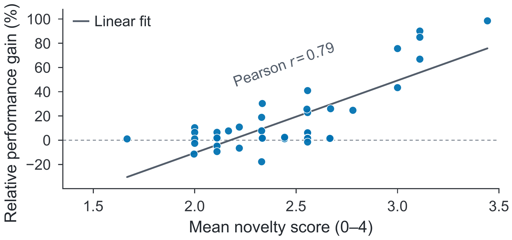

AutoRSEEvaluating LLM Agents as Recommendation Engineers
for Self-Evolving Recommender Systems
1 University of Science and Technology of China2 National University of Singapore
arXiv:2610.37228 · cs.IRCan agents find
better ideas?
AutoRSE evaluates how agents improve recommendation baselines.
Read abstract
How AutoRSE works.
Start from a recommendation baseline.
Illustrative protocol animation; time is compressed.
Six baselines.
Two recommendation settings.
| Baseline | Modeling approach | Dataset | Primary metric |
|---|
Showing all 6 tasks.
Agents can improve
recommendation performance.
mean relative test-score improvement
35 of 42 configurations outperform the reference baseline.
Relative change from each task’s baseline. Negative values are shown explicitly. Average gain is the unweighted mean across six tasks.
Explore the optimization trajectories.
Loading the source trajectories…
HSTU
Hover or tap the chart, or use the arrow keys on this slider to inspect validation scores. Expand Data & downloads for the numeric table.
Data & downloads
53 included trials across 6 recommendation models and the 3 agent configurations in the source figure. Steps show the best confirmed validation score within each trial; the summary is the median and min–max of trials with an observation by that time. Missing starts stay empty. Trial counts can therefore change over time.
Time is normalized within each recorded session, from its first to last recorded step. 100% is the end of that recording, not a shared 12-hour timestamp. Values are carried forward after the last observation, without smoothing. Source-flagged full-validation OOF/CV feedback is included.
The dashed line here is the validation baseline; the original paper figure used test-score references. The trajectory values are unchanged. IntSR × Codex includes 2 trials because one run was excluded by the source audit. Downloads retain source run IDs and all recorded observations.
Most changes optimize engineering.
| Optimization strategy | Share |
|---|---|
| Engineering optimizations | 91.7% |
| Model ensemble | 59.0% |
| Parameter tuning | 26.2% |
| Training strategy | 6.6% |
| Algorithmic innovations | 8.3% |
| Feature modeling | 4.2% |
| Model architecture | 3.1% |
| Objective function | 1.0% |
Novelty and performance
move together.
Loading chart…
Hover, tap, or focus a point to inspect it. Use arrow keys, Home, and End to move between visible points. The data table below contains the same selected values.
Data & downloads
| Task | Agent configuration | Novelty | Gain | Performance trials |
|---|
Each point is one task–agent configuration. Novelty averages three rating-round means reported to two decimal places. Gain is 100 × (mean final test score / task baseline − 1).
Performance uses three trials per point, except OneTrans with Terminus-2 × GPT-5.5, which uses two. Filters recompute Pearson r and the descriptive linear fit from the selected points. Both are omitted for fewer than three points or zero variance. This association does not establish causation.
The interactive data could not load. The original figure is shown below.

Better ideas give agents
more room to improve.
- Task input
- Agent
- Research idea
- Implementation
The agent proposes ideas during its normal research loop.
- Task input
- Generate 8 ideas
- Select 2–3
- Implementation
Each ideation round explicitly generates and selects candidate ideas.
- Task input
- External idea libraryAgent
- Select & adapt
- Implementation
An external idea library is available from the start of the run.
Mean relative test-score gain over self-generated ideas
Claude Code × DeepSeek V4 Flash · 6 tasks · 3 trials
Compare task scores
| Task | Standard | Self-generated | Idea-injected |
|---|
Citation
View BibTeX
@misc{tian2026autorse,
title = {AutoRSE: Evaluating LLM Agents as Recommendation Engineers
for Self-Evolving Recommender Systems},
author = {Rui Tian and Yi Fang and Yejin Hua and Du Wang and
Yuzhe Wang and Minxuan Shan and Zirui Ren and Xinyu Lin and
Chongming Gao and Wenjie Wang and Fuli Feng},
year = {2026},
eprint = {2610.37228},
archivePrefix = {arXiv},
primaryClass = {cs.IR},
url = {https://arxiv.org/abs/2610.37228}
}